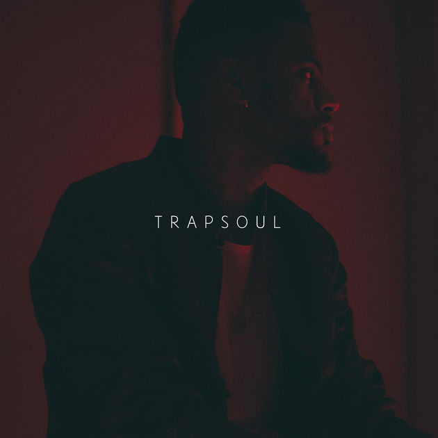
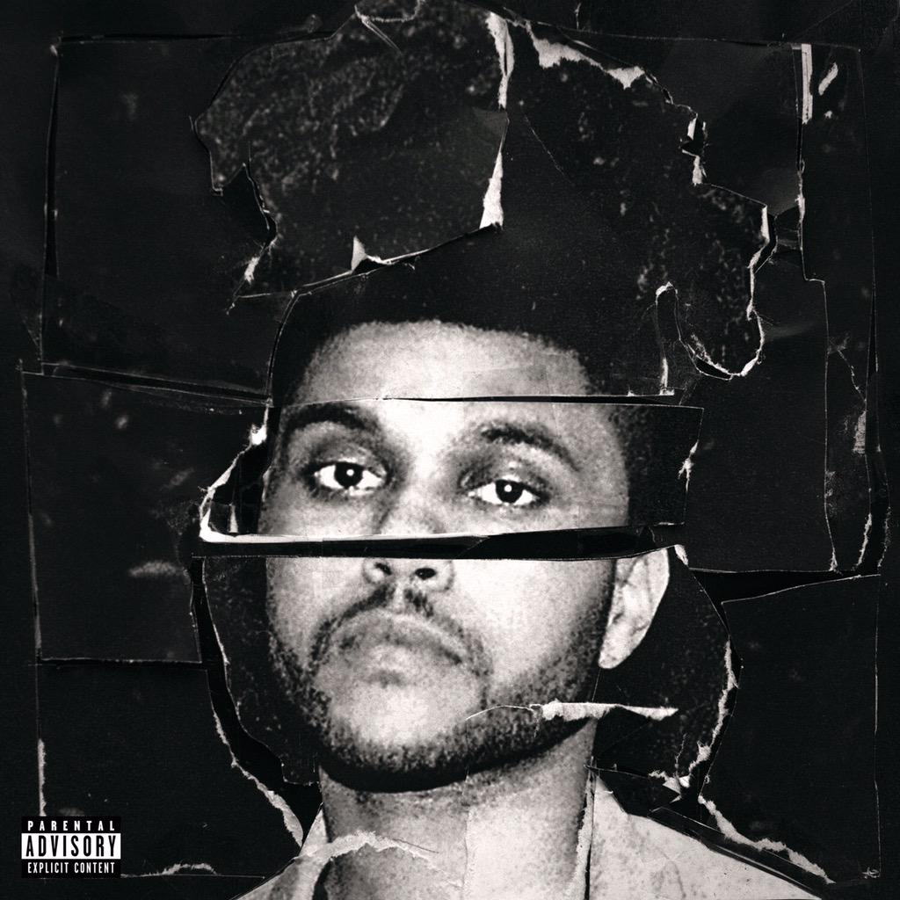

Porta Bohemica is the name of an old train line that once connected Germany and Austria.
Acclaimed singer-songwriter Trixie Whitley, was inspired by the concept of such remote journeys when choosing a title for her latest album.
Her sophomore release, Porta Bohemica, represents an introspective expedition into the depths of her creative identity, culminating in her
resolve to fearlessly let go of gratuitous baggage, not needed on future travels.
uitgebracht 23 oktober 2015
porta bohemica
Trixie Whitley
Faint Mystery
Salt
Closer
Hourglass
Eliza's Smile
Soft Spoken Words
New Frontiers
Witness
The Visitor

Just as G-funk made the dance floor safe for rap fans in the ‘90s, Louisville’s Bryson Tiller is the trap-soul ambassador, opening the treacherous style to R&B fans.
The slow-rolling beats frame his cascading voice perfectly on "Don't" and "Been That Way."
Tiller isn’t confined to lover-man status; he lays down hot bars on “502 Come Up” and “Rambo,” showing the turn-up is real.
Keep your precious suits and silks in storage; this is sexy, grimy music.
uitgebracht 2 oktober 2015
Bryson Tiller
T R A P S O U L
Intro (Difference)
Let Em' Know
Exchange
For However Long
Don't
Open Interlude
Ten Nine Fourteen
The Sequence
Rambo
502 Come Up
Sorry Not Sorry
Been That Way
Overtime
Right My Wrongs

In the wake of his trilogy of 2011 mixtapes and his addictive contributions to 2015’s Fifty Shades of Grey soundtrack, Abel Tesfaye makes an expert transition from shadowy R&B trailblazer to full-blown pop presence.
With assists from Lana Del Rey and Ed Sheeran, Beauty Behind the Madness is a brash collection of electrifying melody and brooding atmosphere.some It's some of The Weeknd's best work to date.